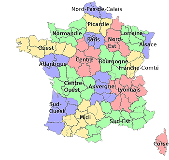
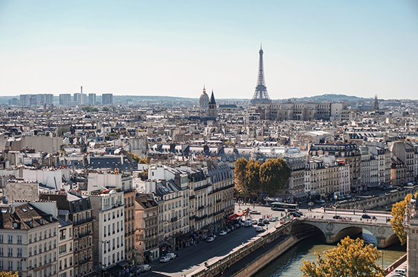
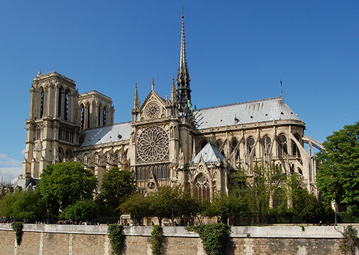
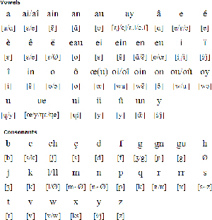
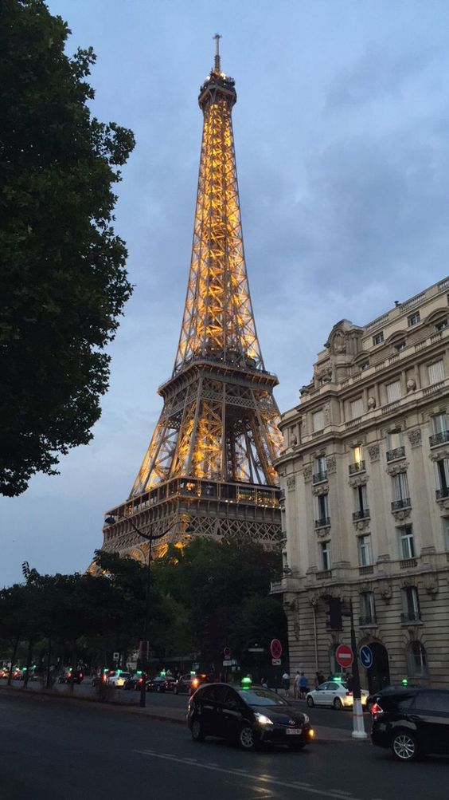
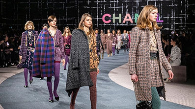
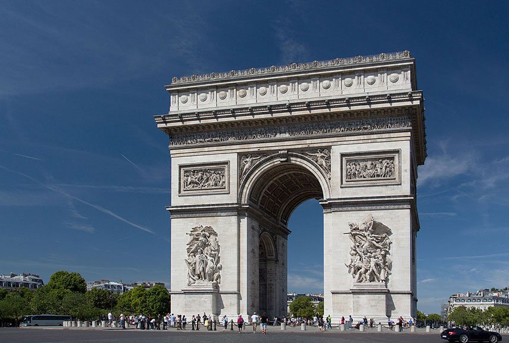
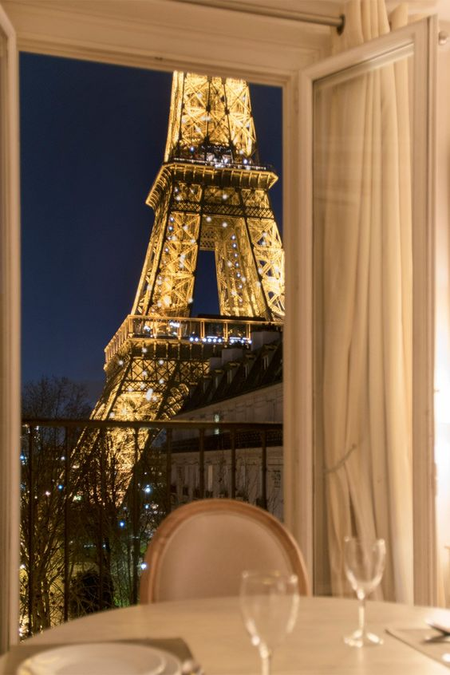
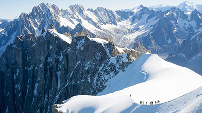

flag of France
anthem of France

official name : Republique Francaise (French Republic)
official language : French
capital : Paris

population : 65,823,000
head of states : Emmanuel Macron (President)

monetary unit : euro

things i love about France
- France is a very beautiful country 
- the architecture 
- the language 
- the eiffel tower 
- Paris is the center of the fashion industry and holds the name of global fashion capital 
with 89 million tourists each year, France is the most visited country on earth.


its very varied, but its beautiful.
it sounds classy and elegant lol


beautiful in any wheathers.
Historically, Paris Region has always been a major reference for fashion and luxury.
Paris Region is home to several Haute Couture Maisons such as Dior, Givenchy, Jean-Paul
Gaultier, Chanel, and high-end luxury fashion brands such as Saint-Laurent, Celine, Hermes,
Lanvin and Louis Vuitton.
fun facts about France
- France Has The Largest Art Museum
- France Produces Over 1,500 Types Of Cheese
- French was the official language of England for about 300 years French was the official language of England between 1066 and 1362.
- France was the first country in the world to ban supermarkets from throwing away food In February 2016, France became the first country in the world to ban supermarkets
- Europes highest mountain is Mont Blanc in the French Alps 

The Louvre Museum in Paris, France is the largest art museum in the world.
This museum is so big that if you wanted to spend 30 seconds looking at each piece
of art, it would take you approximately 100 days to get through the entire museum.

In fact, France ranks in the top ten countries for their amount of cheese consumption.
More than 95% of the French population eats cheese. French cheeses have several defining
characteristics such as how long they age, the process of making the cheese, and how moldy they are.
Aafter William the Conqueror led the Norman conquest and subsequent occupation
of England in 1066, he introduced Anglo-Norman French to the nation.
from throwing away or destroying unsold food. Stores must now donate surplus groceries
to food banks and charities.
Standing at a height of 4,807m, Mont Blanc is officially the second-
highest mountain in Europe.